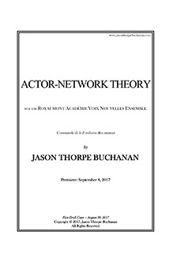

VIEW SCORE:
- 
ABOUT THE WORK:
ACTOR-NETWORK THEORY (2017)
Instrumentation: soprano, bass flute, bass clarinet/contrabass clarinet, percussionist, harp, piano, violin, viola, cello, and electronics
Dedication: For the Royaumont Voix Nouvelles Ensemble
Commission & Awards: Commissioned by Fondation Royaumont
World Premiere:
Royaumont, Asnières-sur-Oise,
Paris Region, France - Royamount Académie Voix Vouvelles Ensemble - September 8, 2017
Purchasing information: Digital Score PDF: $19.95, Score, Parts (RENTAL ONLY), and Max Patch: $109.95
Contact: jasontbuchanan[at]gmail.com
PROGRAM NOTES:
ACTOR-NETWORK THEORY was commissioned by Fondation Royaumont and composed between April and August of 2017 for the Royaumont Académie Voix Nouvelles Ensemble’s instrumentation of soprano and mixed ensemble, with electronics. The work is structured around two pages of text, culled from over 18,000 words generated by the DadaDodo engine, a class of program known as “dissociators” that “analyses texts for word probabilities, generating random sentences based on that.” The result is sometimes nonsensical, but often reveals intriguing alternative meanings or associations. These fragments were then composed into a linear blueprint, using the resulting speech patterns as a temporal framework. ANT was developed by Latour and others as an analytical tool to map and attempt to explain relationships and interactions between human and non-human ‘actors’, exploring how material-semiotic networks are formed, hold together, or fall apart. These networks are precarious, in that the exchange between nodes must be repeatedly ‘performed’ or the network will dissolve. In some ways, the transhumanist movement embodies ANT, which suggests that all nodes within a social network are ‘actors’, whether human or machine — a boundary that is increasingly blurred. Mutual interaction between these nodes creates a feedback loop, in which the technology we have developed begins to influence and change the human ‘actors’ participating in this system. Developments in technology and digital communication increasingly influence not only our relationships with one another, but our behavior as individuals and our interaction with the world. We are forced to consider to what degree we allow technology to mediate our presence with other humans, fundamentally challenging the ways in which we think about consciousness and our identity as human beings. As stated by Benjamin Piekut: “Networks are never simply language, never simply sound, never simply personal contacts, never simply practices and institutions, but rather a messy mix of all types of things”.
Performances of ACTOR-NETWORK THEORY

Royaumont, Asnières-sur-Oise, France